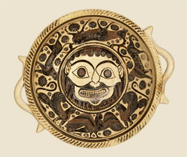

Archaic periodThe Archaic period was a time of great change in Greece. Cities, such as Corinth, Argos, Athens and Sparta, grew rich and powerful. Many great temples to the gods were built. In Greek art, images and patterns from the East, such as griffins and sphinxes, became very popular. 
XXX
|